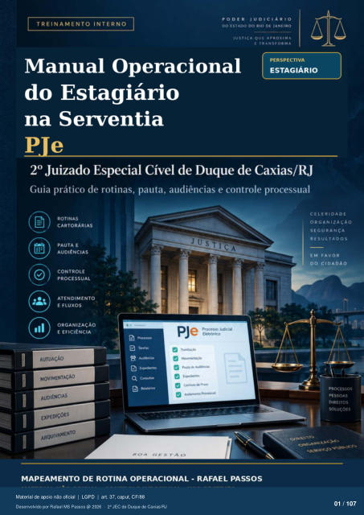

Leitura automática da imagem — revisar
Transcrição automática em português, ainda não revisada. Confira grafia, prazos e termos jurídicos na imagem e no PDF antes de utilizar.
TREINAMENTO INTERNO
DO ESTADO DO RIO DE JANEIRO
JUST 'CA QUE APROXIMA
E TRANSFORMA
do Estagiário na Serventia
Ple Guia prático de rotinas, pauta, audiências e controle processual
111
ROTINAS
CARTORÁRIAS
PAUTA E
AUDIÊNCIAS
CONTROLE
PROCESSUAL
ATENDIMENTO
E FLUXOS
ORGANIZAÇÃO
E EFICIÊNCIA
Wetas
AUTUAÇÃO
MOVIMENTAÇÃO
AUDIÊNCIAS
EXPEDIÇÕES
ARQUIVAMENTO
PJe Processo Judicial
C-V'tto•
MAPEAMENTO DE ROTINA OPERACIONAL - RAFAEL PASSOS
ORGANIZAÇÃO
SEGURANÇA
RESULTADOS
EM FAVOR
PRCxESSOS
PESSOAS
DIREITOS
SOLUÇOES
Ver também o infográfico original (página 1)
